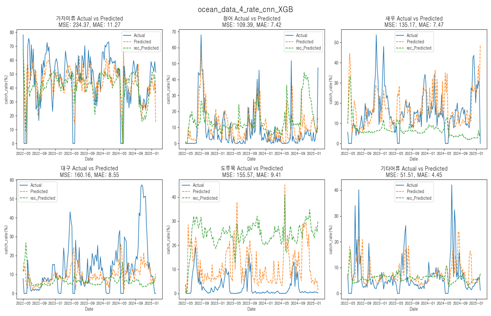

정국호
데이터 분석 & AI
- 🎂 생년월일: 1999년 09월 14일 (만 25세)
- 📞 연락처: 010-4138-5728
- 📧 이메일: mrgjh13579@gmail.com
- 📍 주소: 부산광역시 사상구 주례로
- 🔗 Github: 여기로오세요~
- 🎖️ 병역: 육군 병장 만기 제대
(2019.03.04 - 2020.10.07) - 💡 소개: 호기심과 열정으로 데이터의 깊이를 탐색하는 데이터 사이언티스트 입니다.
해양 어획량 예측 및 분석 프로젝트
1. 프로젝트 개요 (Overview)
"해양 기후 데이터와 위성 이미지를 활용하여 어획량 변동성을 예측하고, 정책적/환경적 요인을 분석하였습니다."

2. 배경 및 문제 정의 (Challenge)
🧐 분석 배경
해양 기후 요소가 실제 어획량에 미치는 영향을 파악하여, 지속 가능한 어업을 위한 예측 모델을 구축하고자 했습니다. 위성 사진(기상청 데이터)과 수치 데이터를 복합적으로 활용하는 접근을 시도했습니다.
🚧 직면한 문제 (Difficulties)
- 데이터의 심한 변동성: 어획량 데이터의 표준편차가 매우 커서 학습이 어려움. '어획률'로 지표를 변경해보았으나 여전히 불규칙함.
- 낮은 예측 성능: 초기 딥러닝(CNN, LSTM) 모델 적용 시 RMSE/MAE 에러율이 매우 높게 측정됨.
- 데이터 부족: 딥러닝 모델의 파라미터 수 대비 학습 데이터 샘플 수가 절대적으로 부족하여 과적합(Overfitting) 발생.

3. 해결 과정 (Process & Action)
✅ 가설 검증 및 데이터 접근
- 멀티모달 접근: 위성 사진(CNN)과 시계열 수치 데이터(LSTM)를 결합하여 패턴 분석 시도.
- 차원 축소 및 특성 선택: PCA 및 도메인 지식 기반의 특성 선택(Feature Selection)으로 노이즈 제거.
- 외부 요인 분석: 단순 기후 데이터 외에 '정책 및 인위적 조업 활동'이 어획량에 미치는 영향(이상치)을 분석.
🔧 모델링 전략 수정 (Troubleshooting)
딥러닝 모델의 과적합 문제를 해결하기 위해, 적은 데이터셋에서도 강건한 Machine Learning 앙상블 모델(XGBoost, Random Forest)로 전환하였습니다.
 [기존 DL 모델 대비 안정적인 추세를 보이는 ML 모델 예측]
4. 결과 및 인사이트 (Result)
📊 최종 결론
- 환경 변수의 한계: 단순 해양 환경(수온, 염분 등) 변화가 실제 어획량에 미치는 영향은 예상보다 낮았습니다.
- 비선형적 요인 발견: 어획량은 자연적 요인보다 정책(금어기, 쿼터제) 및 조업 활동과 같은 인위적 개입에 더 큰 영향을 받는다는 사실을 도출했습니다.
- 모델링 교훈: "무조건적인 최신 딥러닝 기법보다, 데이터의 규모와 특성에 맞는 모델(ML) 선정이 성능 확보에 유리하다"는 점을 확인했습니다.